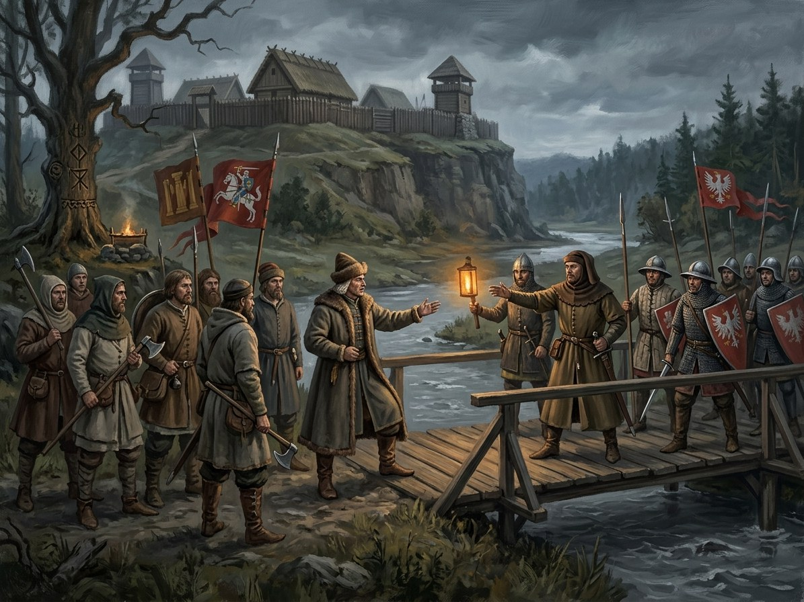

Coronation blocked; Vytautas refuses Henė¶
Ryšiai
Caused by: Congress of Lutsk: the crown offered
Causes: The Lutsk crown (turned to leaves) · Vytautas dies at Trakai; the Last Flame goes out — Vytautas postpones the coronation and dies uncrowned.
Location: Noteć ford (Neumark / Greater Poland border) — Record: Sigismund’s couriers Cigala and Roth robbed on the Neumark / Greater Poland border by Jan Czarnkowski’s guards (before 19 Aug 1430); the embassy waited at Frankfurt (Oder) and turned back. The crown itself was never seized.
Participants: Zbigniew Oleśnicki
Crown embassy blocked at the Polish border (Aug 1430); Vytautas refuses Henė

Crown embassy blocked at the Polish border (Aug 1430); Vytautas refuses Henė · event¶
Tipas |
event |
Years |
1430 |
Status |
Historical record |
Book |
|
Pastaba |
August 1430: preliminary couriers are robbed; the later crown embassy turns back. Henė’s leaf-filled chest is the saga’s deliberate invention. |
What the chronicles say [Historical record]¶
The crown was never intercepted. Sigismund of Luxembourg sent two couriers ahead of the embassy, the jurist Baptista Cigala and Sigismund Roth. They were robbed and beaten before 19 August 1430 on the Neumark and Greater Poland border by royal guards under Jan Czarnkowski, who took letters, horses and valuables worth about a thousand ducats. The main embassy (Archbishop Günther of Magdeburg, Dukes Přemek of Opava and Ludwig of Brzeg-Liegnitz, Hungarian and Bohemian lords) waited at Frankfurt an der Oder and turned back; the crowns, made by Nuremberg goldsmiths, were with it. Jogaila read the captured letters and ordered every road watched. The Komtur of Schlochau wrote on 19 August that the crown had not been taken because the couriers did not have it. The coronation had been planned for 15 August, then 8 September, then 29 September, in Vilnius. Vytautas’s letter of 13 October makes it clear he wanted the crown only with Polish consent. Zbigniew Oleśnicki was the leading opponent but was not at the Łęczyca council of August 1430 (Szybkowski 2010; Bar 2017).
Petrauskas’s documentary reconstruction also traces the returned crown in pawning records from 1431 through 1434. The leaf transformation below deliberately changes the object’s fate; it does not solve a proven historical disappearance. See History and the Saga.
What really happened [The saga’s invention]¶
On the Assumption, 15 August 1430, Henė comes down into the vault at Trakai and offers the last deal: the crown will arrive if the flame is allowed to die. Vytautas refuses. Pilkoji waits at the door with feast-day iron, deciding whether to break the second rule of the Pack. Late in August Pilkoji’s wolves, sent to bring the crown through, find the Polish border guards cursing over a gold-painted trunk at the Noteć ford: inside, to the rim, dry leaves. A jester sits on the verge watching. The crown that was never meant for the mortal world has turned to leaves.
Consequences¶
Caused by the Congress of Lutsk, where the crown was offered. It turns the crown to leaves (the Lutsk crown). Zbigniew Oleśnicki takes part. The failure frames Vytautas’s last weeks and his death.
Dramatisation¶
Book IV ch. 21 „Karūnos Kelionė“ (Henė, 15 August 1430), ch. 22 „Paskutinis Sandėris“ (Vytautas, the same day, the Trakai vault), ch. 23 „Lapai Pakelėje“ (Pilkoji, late August, the Noteć ford). Seasonal tag: Žolinė, high summer.
Sąsajos¶
graph LR
ev_crown_intercepted["Crown embassy blocked at the Polish border (Aug 1430); Vytautas refuses Henė"]
ev_lutsk["Congress of Lutsk: the crown offered"]
ev_vytautas_dies["Vytautas dies at Trakai; the Last Flame goes out"]
lutsk_crown["The Lutsk crown (turned to leaves)"]
notec_ford["Noteć ford (Neumark / Greater Poland border)"]
olesnicki["Zbigniew Oleśnicki"]
ev_crown_intercepted -->|Causes| lutsk_crown
ev_crown_intercepted -->|Location| notec_ford
ev_crown_intercepted -->|Causes| ev_vytautas_dies
ev_lutsk -->|Causes| ev_crown_intercepted
olesnicki -->|Took part in| ev_crown_intercepted
style ev_crown_intercepted stroke-width:3px